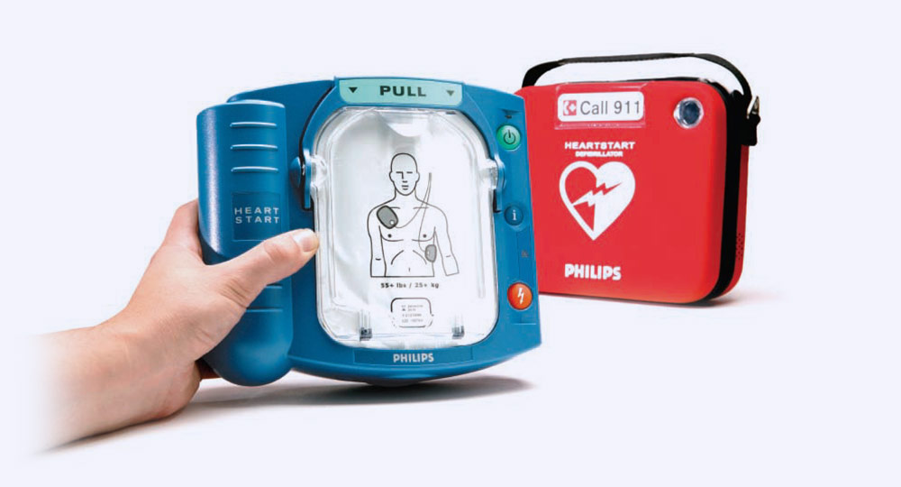
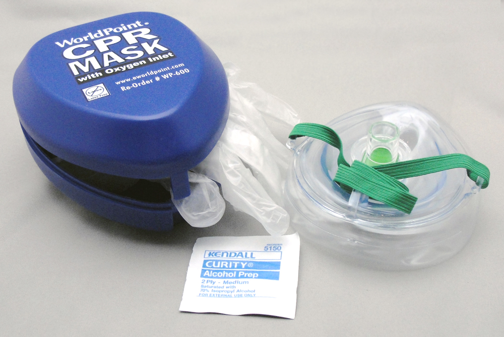
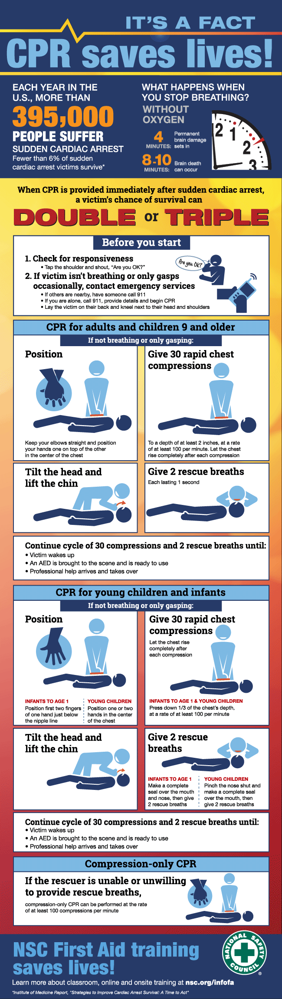

Tools used when Performing CPR
AED (Automatic External Defibrillator)

CPR Pocket Mask

Bag Valve
Saving A Life: Step By Step

AED Guidelines
AEDs (Automatic External Defibrillators), when used swiftly-in the first 3-5 minutes of a person collapsing-have been shown to dramatically increase the survival rate of people suffering from cardiac arrest. An AED will automatically determine the heart rhythm of a pulseless victim and, if the victim is in ventricular fibrillation (v-fib), shock the victim's heart in an attempt to restore its rhythm to normal.
When a heart is in v-fib, it is still receiving nerve impulses from the brain. These impulses are simply firing so chaotically that the heart cannot produce a "beat;" it cannot expel enough blood to keep the circulatory system (and thus oxygen) flowing through the body. Brain cells begin to die after 4-6 minutes of oxygen deprivation. The heart will continue its uncoordinated twitching until it is no longer receiving electrical impulses from the brain (and thus stops all together), or until the heart is shocked back into a normal rhythm, which is where an AED comes in. An AED stops the heart from its spasm by shocking it. This allows the nerve impulses a chance to resume their normal pattern, which, in turn, allows the heart to resume beating at its normal pace. AEDs can be found in many public areas including most malls, stadiums and airports. They are straightforward and easy to use. Since time is the most important factor in a cardiac emergency, it is important for the general public to understand how to use an AED.
Note: AEDs are NOT for use on trauma patients, children under the age of 1, or victims that HAVE a pulse.
Call 911. If you see someone collapse, immediately call 911 and get the medics en route.
If there are other people around, choose someone specific and instruct him to call 911 and explain the situation. This decreases confusion about who should do what and ensures that the call is being placed. Check the victim's respirations and airway. If someone has collapsed, you should immediately determine whether he or she is breathing. If the victim is breathing, you know that he has pulse. If the victim is not breathing, begin rescue breathing and chest compressions as described in How To Perform CPR. Locate an AED. If there is an AED nearby, ask a bystander to take over CPR while you apply the AED to the victim. Uninterrupted CPR is an important factor in increasing the recovery rate of cardiac arrest patients. Always ensure that someone is providing CPR for the victim unless the AED machine is actively analyzing or shocking the victim. Attach the AED. First ensure that the adhesive AED pads are attached to a cable, which is plugged into the AED machine. Then bare the victim's chest and attach the adhesive AED pads in the appropriate locations. The AED should include a diagram (typically on the adhesive pads themselves) indicating where each pad goes. Always follow the instructions on the AED. Typically the negative pad is placed on the victim's right upper chest wall (above the nipple and to the right-from the victim's perspective-of the sternum). The positive electrode is placed on the victim's left chest/side (axillary line) just below the nipple and pectoral muscle.
Note: CPR should not be interrupted while the adhesive pads are being applied.
Turn on the AED. Stop CPR and say, "CLEAR!" Ensure that nobody is touching the victim and push the "analyze" button on the AED machine. The AED will not be able to analyze the victim's heart rhythm accurately during CPR. Analyze the victim's heart rhythm. The AED will automatically analyze the heart rhythm of the victim and inform you, the rescuer, whether shocks are indicated. A shock is only indicated if the victim's heart is in ventricular fibrillation. If you get a "no shock" message from the AED it can mean one of three things: the victim that you thought was pulseless does indeed have a pulse, the victim has now regained a pulse, or the victim is pulseless but is not in a "shockable" rhythm (i.e. not ventricular fibrillation). In this case proceed to step 11. Shock the victim. If the AED indicates that a shock is required, make sure that everyone is clear of the victim. Tell everyone assisting you to stay clear of the victim and ensure that you are clear of the victim as well. Then press the shock button on the AED machine to deliver the first shock. Immediately following the shock, begin CPR for 5 cycles (or approximately 2 minutes). Begin CPR for 2 minutes (5 cycles). Perform CPR for 5 cycles of 30 compressions to 2 breaths.
Note: Do not remove the AED pads to perform CPR. Leave them in place.
Check the victim's rhythm. Use the AED to analyze the victim's rhythm after 2 minutes of CPR. Revert to step 7. If indicated by the AED, provide the victim with another shock. If the machine gives a "no shock" message after any analysis, check the victim's pulse and breathing. If a pulse is present, monitor the victim's airway and provide rescue breathing as needed. There are many different AED designs, but all are created with simplicity in mind. Many models will audibly instruct the rescuer about exactly what to do during each step of the process (i.e. "stand back" and "check breathing and pulse"). Some will even deliver the shocks automatically. As long as you understand the general principles behind an AED, you may be able to save someone's life.
Remember: Do NOT use an AED on a trauma patient. Do NOT use an AED on a child under 1 year of age. Do NOT use an AED on a victim with a PULSE.